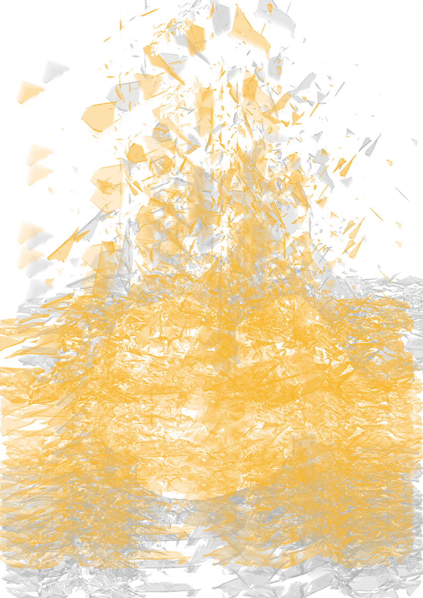
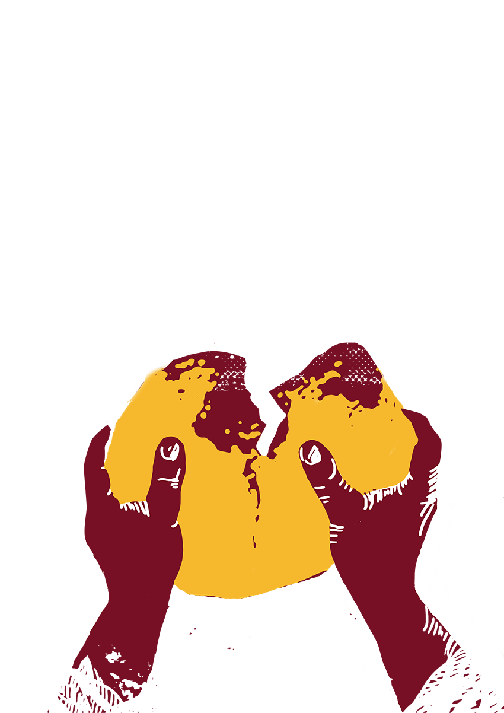
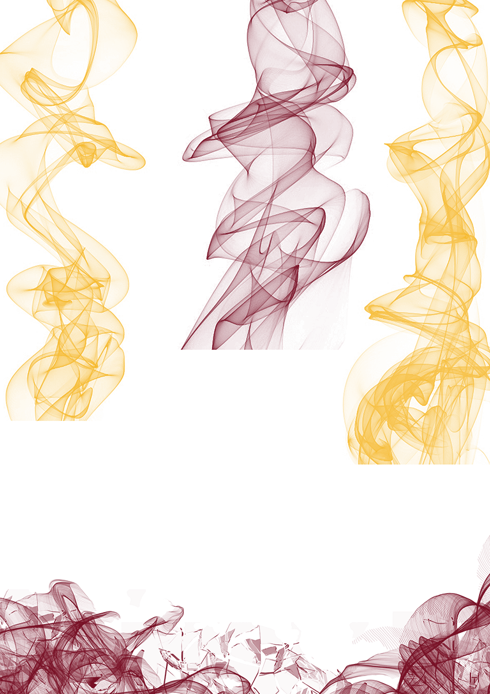

Наливайко Олексій Миколайович народився в с. Єрковці Київської обл. в 1936 році. Велика родина, яка
складалася з мами, батька, дядька, старшого брата та молодших сестричок, мало не щодня дивилась в
обличчя смерті: в їхньому будинку розквартирувались німецькі солдати, які вселяли страх не тільки дітям,
але й дорослим. Селом пройшла чутка про те, що не сьогодні-завтра ромів збираються розстріляти. План
зірвав неочікуваний відступ окупантів:
Аудіо текст
Наливайко Олексій Миколайович
Я помню, как отступали немцы. Сначала тихо. Когда отступали, мы даже не слыхали, что немцы из
хаты вышли. По маминых словах, рядом с домом стояла машина крытая и нас в этот день должны были
ночью расстрелять.
Да, уже мы были на стороже… Сидим. Мама возле окна… А потом, когда настало утро, смотрю,
говорит, встану, посмотрю, – нет той машины? Скрылась машина та, а то мы ждали вчера, что может
нам гаплык будет.
А потом уже, когда началось уже рассветать, так они когда выходили уже, так они начали палить
это… Сожгли склады с хлебом и стоят с автоматами и охраняют, – хочешь хлеб, лезь в огонь и бери,
но тушить не давали. Так у меня отец под огнем тем лазил туда в этот барак за хлебом. Ну он уже
пригоревший был, вот это помню. И вот только, когда они вот это все спалили, тогда ушли.



Наливайко Олексій Миколайович
Основною проблемою, з якою роми, як і багато інших жителів окупованих територій, стикалися повсякденно,
була нестача їжі. Відступ Червоної армії з території України супроводжувався застосовуванням тактики
«випаленої землі». Знищувалось все, що могло слугувати життєзабезпеченню не лише військ ворога, а й і
цивільного населення. Найбільш поширеними елементами цієї тактики були: знищення запасів харчових
продуктів і врожаю, забруднення або отруєння джерел питної води, руйнування шляхів і засобів транспорту,
техніки, будівель і житла, іноді навіть цілих міст.
Ще на початку ХХ ст. тактику «випаленої землі» було визнано воєнним злочином. Однак у СРСР з початком
німецько-радянської війни цю тактику було «узаконено» офіційними постановами РНК СРСР і ЦК ВКП(б), які
зобов’язували партійні осередки й органи влади знищувати все, що не вдалося евакуювати на схід.
Після відступу “совєтів” «викачування» продовольства продовжувалося вже окупантами, через що для мирного
населення пошук їжі перетворився на щоденні поневіряння, на своєрідне ремесло: десь щось виміняти,
перепродати, інколи виростити на присадибній ділянці або ж вкрасти тощо.
Зокрема, дослідниця київського окупаційного повсякдення Т. Заболотна зазначає, що пошук продуктів був
головною проблемою упродовж усього періоду перебування гітлерівців у Києві [3]. Зі свідчень наших
інформантів бачимо, що така ситуація була притаманна й іншим регіонам.
У традиційному ромському суспільстві існує складна система табу, пов’язаних із уявленнями про
«чисте/нечисте». Проте зі свідчень інформантів бачимо, що в ситуації екстреми часто досить кардинально
змінювались стандарти того, що можна і що було заборонено вживати в їжу. Таким чином щезала заборона на
вживання залишків їжі з чужого столу: «…картошки начистит, лука, капусты – и варит, а лушпайки нам
отдавала» [1].
Зі схожою ситуацією зіштовхнулась родина Олексія Миколайовича Наливайка.
Олексій народився в с. Єрковці Київської обл. в 1936 році. Велика родина, яка складалася з мами, батька,
дядька, старшого брата та молодших сестричок, мало не щодня дивилась в обличчя смерті: в їхньому будинку
розквартирувались німецькі солдати, які вселяли страх не тільки дітям, але й дорослим. Селом пройшла
чутка про те, що не сьогодні-завтра ромів збираються розстріляти. План зірвав неочікуваний відступ
окупантів:
Я помню, как отступали немцы. Сначала тихо. Когда отступали, мы даже не слыхали, что немцы из хаты
вышли. Да, это рассказывала мама уже, то по маминых словах, говорит, что стояла машина крытая и нас
в
этот день должны были ночью расстрелять. Это цыган собирали, чтобы расстрелять.
Да, уже мы были на стороже сидим, мама возле окна… А потом, когда настало утро, смотрю говорит,
встану,
посмотрю, нет той машины? Скрылась машина та, а то мы ждали вчера, что может нам гаплык будет. И
когда
они вышли, говорит: «Дети нет тут, тихо, спокойно».
А потом уже, когда началось уже рассветать, так они когда выходили уже, ну не было уже, почти
половину
села освободили, так они начали палить это… Сожгли склады с хлебом и стоят с автоматами и охраняют,
–
хочешь хлеб, лезь в огонь и бери, но тушить не давали. Так у меня отец под огнем тем лазил туда в
этот
барак за хлебом. Ну он уже пригоревший был, вот это помню. И вот только, когда они вот это все
спалили,
тогда ушли [3].